Memory Hierarchy Design¶
Part 1.Memory Basics¶
不同计算机类型的存储器层级
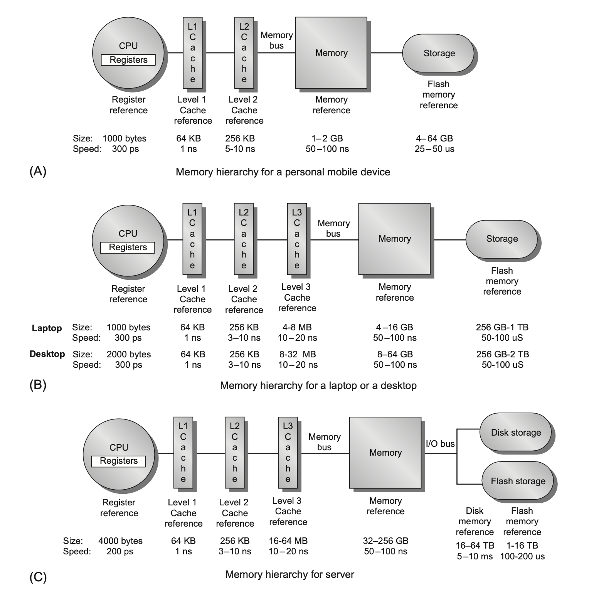
2.1 Memory Hierarchy¶
2.1.1 Main Memory¶
- Main memory: I/O interface between caches and servers
- Destination of input & source of output (所有I/O操作都必须经过主内存)
- 使用 SRAM 作为 cache & DRAM 作为主内存
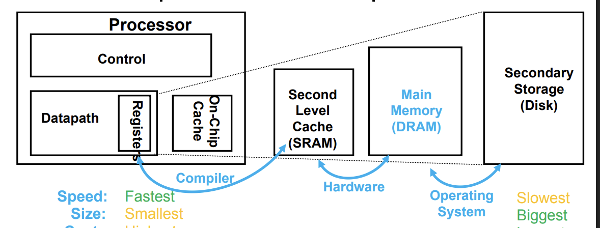
Performance Measures
- Latency（延迟）：获取数据块中第一个字所需的时间
- Access Time：从发出读取请求，到目标数据字真正到达所花费的时间
- Cycle Time：两次无关内存请求之间的最小间隔时间；或一次访问开始到下一次访问开始的最低等待时间
- Bandwidth（带宽）：获取数据块中剩余部分所需的时间（即单位时间内能传输多少数据）
- 所以获取一个完整数据块的总时间大致为：
1. SRAM¶
Static Random Access Memory
- 6 个晶体管/bit，保证读取时不破坏数据
- 无需刷新、访问时间≈周期时间，主要用于构建高速缓存（L1、L2、L3）
- 挑战：随着高速缓存容量的增加，SRAM 的访问时间、功耗和芯片面积都会增加
- 优化：组相联高速缓存通过增加块数和动态功耗来减少访问时间
2. DRAM¶
Dynamic Random Access Memory
- Single transistor per bit
- 每个比特只用一个晶体管 + 一个电容来存储
- 代价是：电容会漏电 → 数据不能长期保存 → 必须刷新
- Reading destorys the information
- 每次读取后，必须立即把数据写回去（restore / rewrite）
- Refresh periodically
- Cycle time > access time
DRAM Organization¶
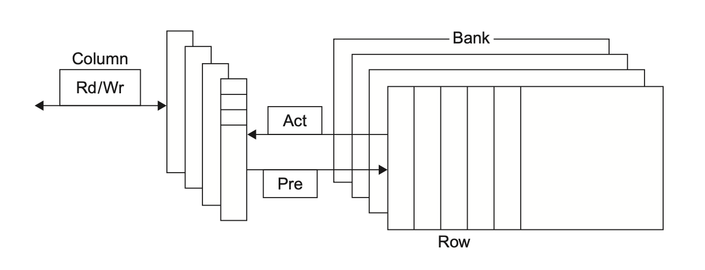
DRAM 内部是一个分成架构：
- 芯片被划分为多个独立的 Bank，Bank 是由 Row 和 Column 组成的二维矩阵
- 每个 Bank 是一个独立的存储阵列，可以并行操作
- 访问数据需要两步：
| 步骤 | 信号 | 操作 |
|---|---|---|
| Activation | RAS（行地址选通） | 打开指定 Bank 的某一行，整行数据被加载到感应放大器（Sense Amplifier） |
| Rd/Wr | CAS（列地址选通） | 从感应放大器中选出特定列的数据读出或写入 |
| Precharge | Precharge 信号 | 重置 Bank 状态，使其准备好接受下一次 Activate |
Row buffer
Row buffer 可以加快 DRAM 的访问速度
- Act 指令传递了 row address，随后该行就被传入 row buffer 中
- 使用 Multiplexer 来选取 column 的内容
- 如果一直访问同一个 row 的内容，可以大幅提升访问速度
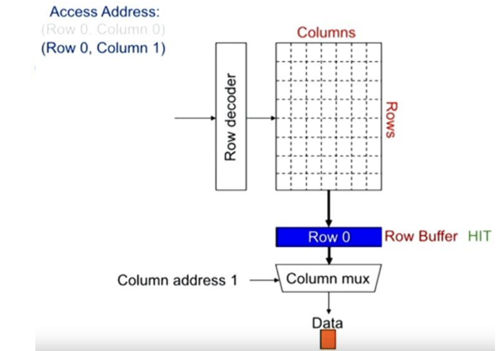
DRAM Improvement¶
- 利用时序信号优化重复访问
- 通过特定的时序控制，允许 CPU 对同一个“行缓冲区”进行连续多次的数据读写，避免了每次访问都重新执行耗时的“行激活”操作。
- 利用空间局部性原理
- DRAM 在每次访问时，会将整行的大量数据（通常为 1024 到 4096 位）一次性缓冲出来，如果后续需要访问相邻数据，就可以直接从缓冲区快速获取。
- 关于性能的提升：
- SDRAM（Synchronous DRAM）：
引入时钟信号，支持突发传输(burst transfer)；
允许在一次行激活后连续传输多个数据，利用了 spatial locality - DDR SDRAM: double data rate：
在 DRAM 时钟的上升沿和下降沿都传输数据；
把数据传输通道一分为二，从而使得 data rate 的带宽翻倍 - Wider DRAM：
加宽内存总线，一次传输更多 bit
Eg. 4-bit transfer mode up to 16-bit buses - Multiple Banks：
把单条 SDRAM 分成 2~8 个独立 Bank
本质是并行隐藏延迟：在等一个 Bank 时，另一个 Bank 可以同时做别的事
- SDRAM（Synchronous DRAM）：
- 关于功耗的提升：
- Reducing power consumption in SDRAMs
- Power down mode：通过指令让 DRAM 忽略时钟信号。在此模式下，SDRAM 的大部分功能被禁用，仅保留内部自动刷新电路以维持数据不丢失，从而大幅降低能耗。
- Graphics Data RAM（GDRAMs）：
专门为 GPU 设计，具有更宽的接口、更高的最大时钟频率和直接连接 GPU 的特性，提供比 DDR DRAM 高 2 到 5 倍的带宽
3. Stacked or embedded DRAMs¶
- HBM(High Bandwidth Memory)：通过 3D 堆叠多个 DRAM 芯片并与处理器（或中介层）紧密连接，大大缩短了 DRAM 与处理器之间的延迟，并提供极高的带宽
- 2.5D 和 3D 堆叠：2.5D（通过中介层连接）已商用，3D（直接垂直堆叠）仍在开发中，面临散热挑战
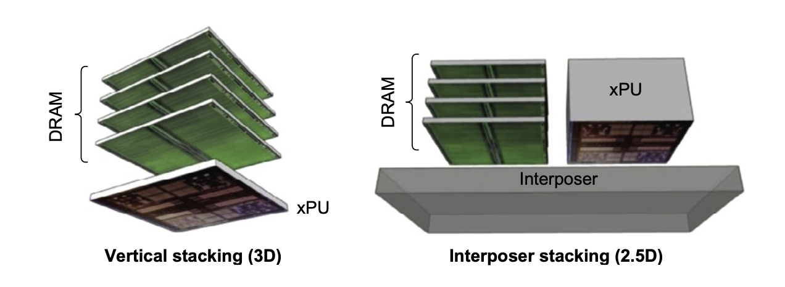
4. Flash Memory¶
- 特性：
- EEPROM (electronically erasable programmable read-only memory) 的一种
- 正常操作时时 Read-only，但如果需要更新数据，可以被擦除并重新写入
- Nonvotile（非易失性）: 断电后数据不会丢失
- 和 DRAM 对比：访问速度更慢，但是价格更便宜
- 挑战：每一个 block 的写入次数是有限的，而且需要先擦除再写入
- 用处：广泛用于 PMD（个人移动设备）和笔记本电脑，作为 SSD 替代传统硬盘
5. Phase-Change Memory, PCM¶
- 一种新兴的非易失性内存技术，通过改变材料的电阻状态来存储数据
- Eliminate the need to erase a page before writing
- 读写耐久性优于 NAND 闪存，读延迟也低于 NAND 闪存
2.1.2 Memory Dependability¶
Soft errors = Transient faults
- 数据内容被意外改变，但硬件电路本身无损坏
- 可通过重写或刷新恢复
Hard errors = Permanent faults
- 某存储单元晶体管烧毁，永远无法正确存储数据
Error detection and fix
- Parity: 加 1 bit 校验位，使整组 bit 中 1 的个数为奇数或偶数
- ECC: 用 8 bit 校验位对 64 bit 数据进行编码，形成 SEC-DED（Single Error Correct, Double Error Detect）
- Chipkill: 把数据和 ECC 码分散到多个内存芯片上，即使一整片芯片完全失效，也能恢复数据。
2.1.3 Four Memory Hierarchy Questions¶
Block Placement¶
组相联高速缓存通过增加块数和动态功耗来减少访问时间
- Direct Mapped Cache：每个数据块在存储器中只有一块确定的位置
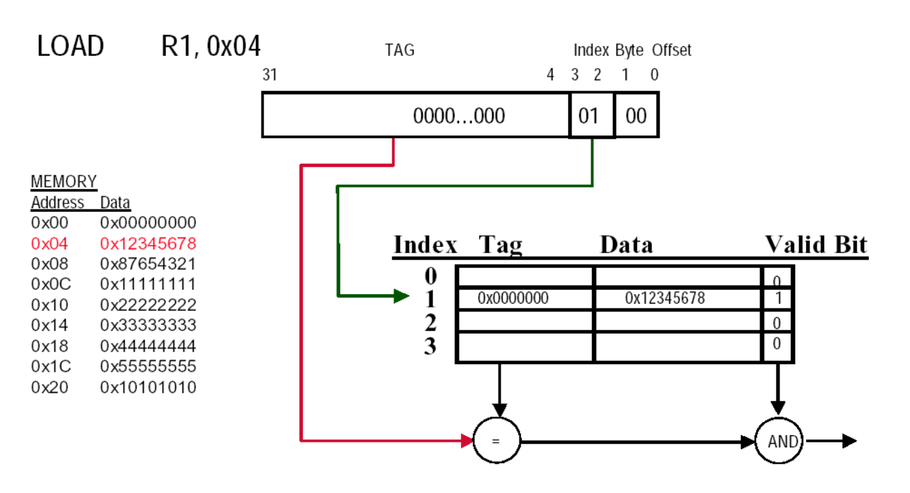
- Fully Associative Cache：数据块可以放在存储器中的任意位置上
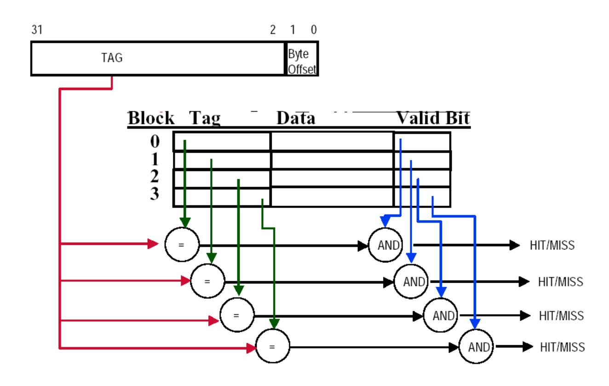
- Set Associative Cache：每个数据块被限制在存储器的某个组(set) 中，而每个组包含了 \(n\) 个可放数据块的地方，数据块可以在组内的 \(n\) 个地方任意挑选
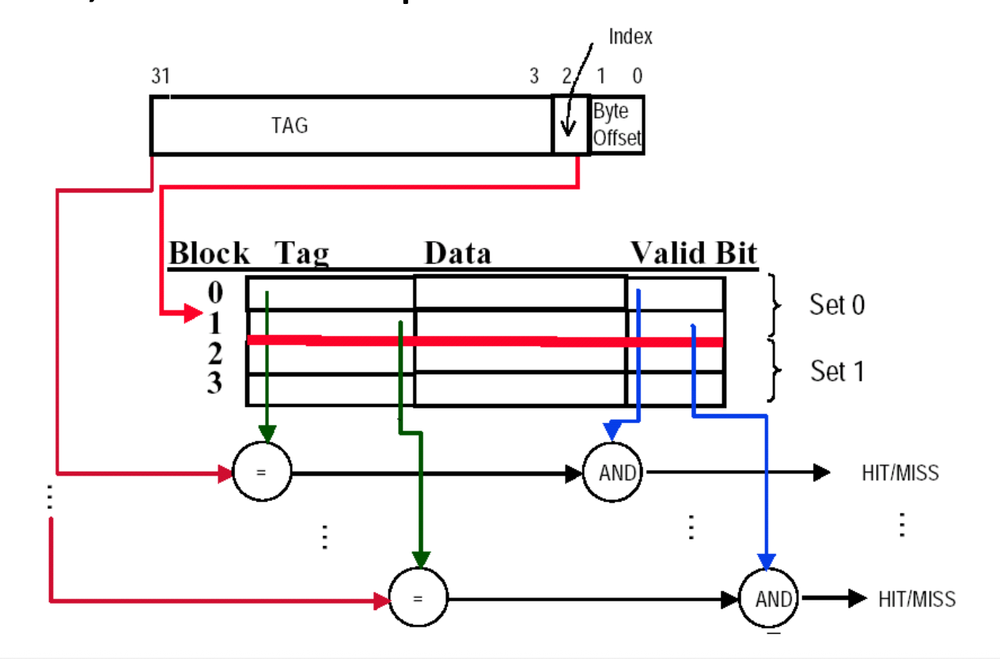
Block Identification¶
每个 cache都有一个唯一的地址，而这个地址被分为多个字段，用于实现数据块的识别
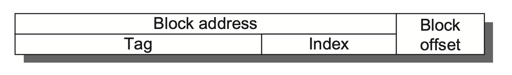
Block Replacement¶
当失效发生时，控制器必须决定将哪个数据块作为被替换的块：
- 直接映射：直接替换某个确定的数据块
- 组相联和全相联：
- 随机(random)：在某个组中随机挑选一个块
- 实现简单，但可能会驱逐那些最近被访问的块
- 最近最少使用(least recently used, LRU)：替换最久没使用过的数据块
- 借助了时间局部性，缺点是实现复杂
- 可以使用 LRU 的近似实现，比如用一组 bit 来记录某个组内的数据块的访问情况
- 先进先出(first in, first out)：也是一种 LRU 的近似实现，替换最早存在的数据块
- 随机(random)：在某个组中随机挑选一个块
Write Strategy¶
如果写入命中的话，通常会采取以下两种策略之一：
- 写穿(write through)：将信息写入 cache，以及下一级的内存里
- 实现简单，确保了数据一致性(data coherency)
- 处理器必须等 write through完成才能执行下一步，这种情况称为写停顿(write stall)。为了解决这个问题，可以增加一个写缓冲区(write buffer)，允许处理器在数据写入 buffer 的同时继续执行后续任务。
- 但如果处理器的频率太高，且有很多的存储指令，可能导致 buffer 饱和(saturation)
- 解决方法是在写缓冲区和主存之间再加一级（L2）高速缓存，buffer 往 L2 写数据更快
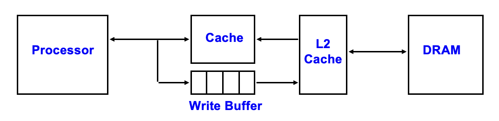
- 写回(write back)：信息只写入 cache，如果 cache 中被修改过的数据块（脏块）要被替代，那么要先将这个数据块写入到下一级内存中，再发生替换。
- 引入一个脏位(dirty bit)，记录某个数据块的修改情况的状态位。
- 优点：速度快（多次写入 cache，可能只需写一次主存），使用更少的内存带宽（更适用于多核处理器），省电
如果写入失效的话，则会采取以下两种策略之一：
- 写分配(write allocate)：对应写回(write back)
- 将目标地址所在的整个数据块从主存（或下一级缓存）加载到高速缓存中，然后再对这个新加载的高速缓存块执行写入操作。
- 非写分配(no-write allocate/write around)：对应写穿(write through)
- 数据直接写入主存（或下一级高速缓存），而不将该数据块加载到当前高速缓存中。
2.2 Cache¶
补充知识：统一缓存 vs. 分离缓存
- 统一缓存(unified cache)：指令和数据共享同一个缓存空间
- 处理器在需要指令时从该缓存中获取，在需要数据时也从该缓存中获取
- 理论上，这类缓存可以更好地利用缓存空间，且硬件得以简化；但存在指令和数据访问会相互竞争缓存端口和带宽的问题
- 分离缓存(split cache)：指令和数据拥有各自独立的缓存空间
- 通常，指令缓存(I-cache) 用于存储指令，数据缓存(D-cache) 用于存储数据
- 优点是允许处理器在同一周期内获取指令和数据（流水线 CPU 就是这么做的），且指令流和数据流是独立的，互不干扰
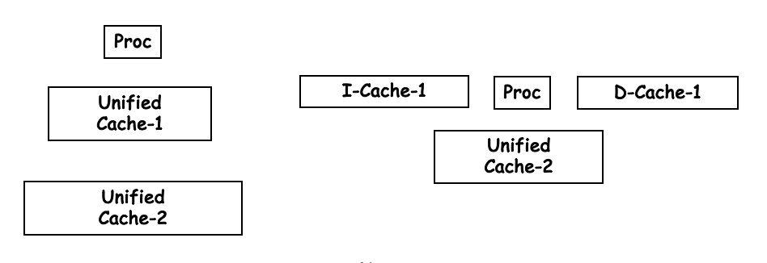
2.2.1 Cache Performance¶
公式汇总
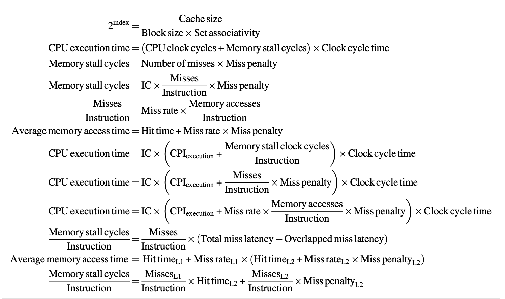
使用 CPU 执行时间来用于评估高速缓存的性能：
存储器停顿周期数由失效数和失效损失(miss penalty) 共同决定：
- 失效率(miss rate)：导致失效的高速缓存访问的比重
- 失效损失和失效率在读和写的情况下会有所不同，所以可能需要分开讨论
实际上无论是直接拿指令数，还是拿失效率作为衡量指标，都是存在一定缺陷，更好的测量方法是使用==平均存储器访问时间(average memory access time, AMAT) ==：
Bug
memory access 包含 instruction access 以及 data access，因此在计算 AMAT 的时候，要按权相加两种不同 access 所需要的时钟周期。而 miss rate 是针对 memory access 的比率。CPI 按之前的方式正常计算即可。
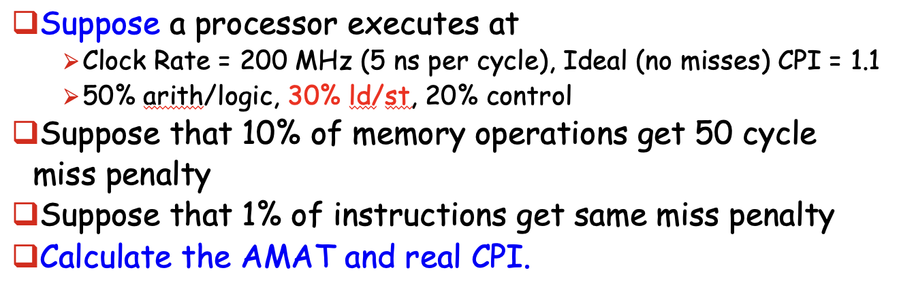
- Memory access: 1 instruction access + 0.3 data access
- 此处的 instruction miss rate （1%）对应 instruction access
- 另一个 10% 是指 data access 的 miss rate
- 因此 AMAT 计算方式如下：
- CPI 正常计算：
Impact of Caches on Processor Performance¶
高速缓存的 AMAT （cache miss）对处理器性能的影响：
- 假定只有存储器的停顿会导致处理器的停顿
- 对于有序处理器而言，AMAT 可以能预测处理器的性能；但是对于乱序处理器不够准确
- 对于低 CPI 和高时钟频率的处理器而言有双重影响（cache miss 的时钟周期固定）：
- \(\text{CPI}_{\text{execution}}\) 的值越低，miss 的影响越大
- 时钟频率越高，每次失效的时钟周期数越多，因此存储器在 CPI 的占比会更高
例题
下面来看一下不同的高速缓存组织对处理器性能的影响：
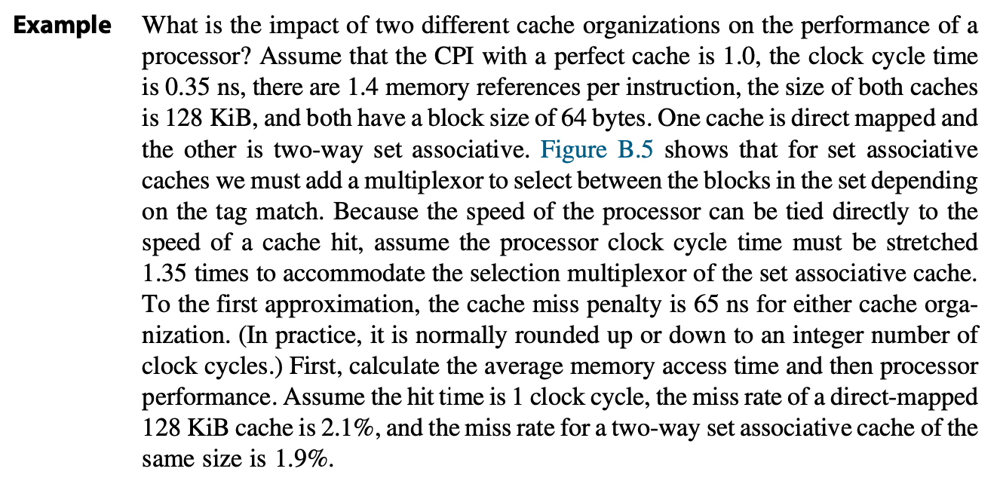
答案
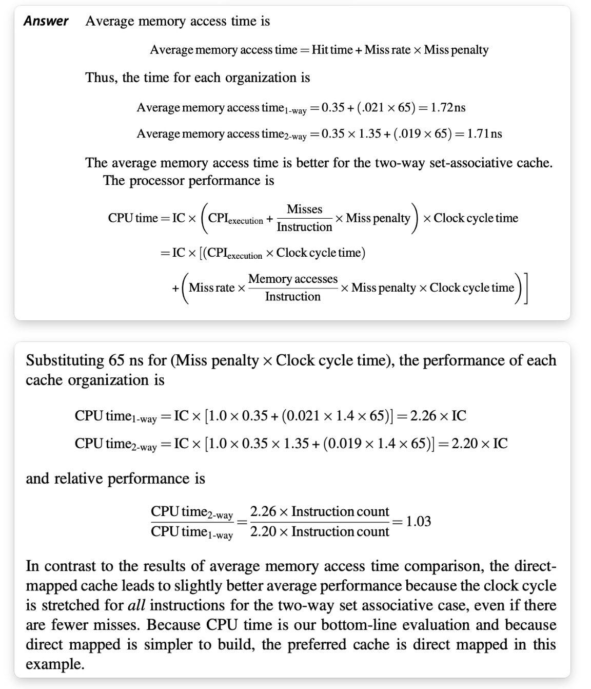
2.2.2 Six Basic Cache Optimizations¶
Root Causes of Miss Rates (3C 模型)
- Compulsory Misses
- 第一次访问某个数据块时，它必然不在缓存中 → 对应的数据块必须先被带入缓存中
- Capacity Misses
- 缓存装不下所有数据 → 当新数据进来时，必须淘汰旧数据
- 如果被淘汰的数据之后又被访问 → capacity miss
- Conflict Misses
- 多个不同地址的数据块争抢同一个缓存位置
如何解决这三类失效问题：
- 冲突失效：采用全相联的置放方案，但成本较高，且会降低时钟频率
- 容量失效：唯一能做的就是扩大高速缓存的容量
- 强制失效：增大数据块容量来解决，但是这会导致其他失效的增加
3C 模型存在一些局限：
- 它只考虑了平均情况，而无法很好地解释个别的特殊情况
- 它同时忽视了替代的策略
“+”表示优化；“-”表示负优化
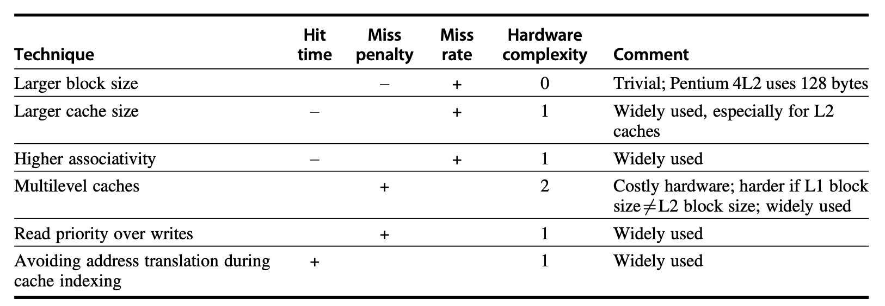
Opt 1: Lager Block Size¶
- Reduce compulsory misses
- Leverage spatial locality (利用空间局部性)
- 增大 block size → 每次从主存加载的数据更多 → 更可能包含后续会用到的相邻数据
- Increase conflict/capacity misses and miss penalty
- Conflic miss：缓存总容量固定 → block size 增大 → 缓存中能容纳的 block 数量减少，不同的内存地址更容易被映射到同一个 Cache 组中
- Capacity miss：如果程序只需要块中的极小一部分数据，Cache 却加载了整个巨大的块。这不仅浪费空间，还可能导致其他真正需要的数据因为空间不足而被过早地踢，从而加剧了容量缺失。
- Miss penalty：缓存块越大，意味着每次 Miss 发生时，需要从主存或下一级 Cache 搬运的数据量就越多。
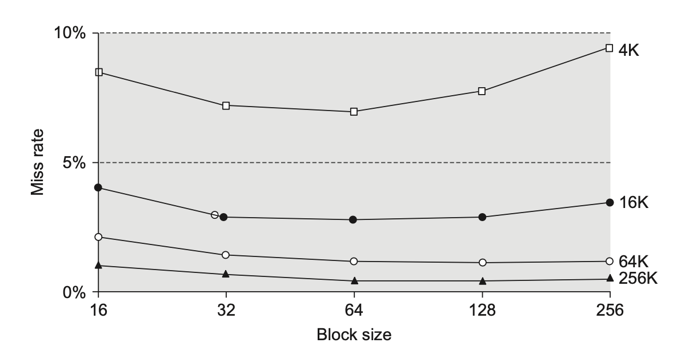
Opt 2: Larger Cache¶
- 增大高速缓存可以降低容量失效。
- 缺点是可能会带来更长的命中时间，以及消耗更高的成本和功率
- 这种技术往往用于不在芯片上的高速缓存中。
Opt 3: Higher Associativity¶
- 降低失效率，但代价是增大了命中时间
- 对于高时钟频率的处理器，不建议提升相联程度；失效损失较大的情况下，则鼓励提升相联程度
2:1 cache rule of thumb
（对于 128 KiB 以下的高速缓存）对于大小为 \(N\) 的直接映射的高速缓存，它的失效率与大小为 \(N/2\) 的二路组相联的高速缓存的失效率相等
Opt 4: Multilevel Caches¶
通过引入多级高速缓存(multilevel caches)，可以有效减少失效损失
先考虑最简单的Two-level caches:
- Average Memory Access Time (AMAT)
- Average Memory Stalls per Instruction
Cache Performance: Equations
失效率（Miss rate）
- 局部失效率（Local miss rate）= 在某个高速缓存的失效次数 / 在该高速缓存中总的存储器访问次数
- L1 和 L2 的局部失效率分别为 \(\text{Miss rate}_{L_1},\text{Miss rate}_{L_2}\)
- 全局失效率（Global miss rate）= 在某个高速缓存的失效次数 / 来自处理器的总的存储器访问次数
- L1 和 L2 的全局失效率分别为 \(\text{Miss rate}_{L_1},\text{Miss rate}_{L_1}\times \text{Miss rate}_{L_2}\)
- 如果不想考虑失效率的话，可以用每条指令的失效数作为衡量指标，计算公式为：
\(L_1\) 内的数据是否需要出现在 \(L_2\) 内？由此引出了两种策略：
- 多级包含(multilevel inclusion)：\(L_1\) 的数据永远都会在 \(L_2\) 出现，确保数据的一致性
- 对于数据块大小不同的多级高速缓存，需要做额外的处理工作，可能会提高 \(L_1\) 的失效率
- 因此为了方便起见，很多高速缓存设计中会让各级的高速缓存保持相同大小的数据块
- 多级排斥(multilevel exclusion)：\(L_1\) 的数据永远不会在 \(L_2\) 出现
- 这适用于 \(L_2\) 仅比 \(L_1\) 稍大一些的情况。
- 当 \(L_1\) 出现失效的情况时，交换 \(L_1\) 和 \(L_2\) 的数据，而非用 \(L_2\) 的数据块替代 \(L_1\)，以避免 \(L_2\) 额外的空间浪费
Opt 5: Prioritize Read Misses Over Writes¶
write through 时 write buffer 带来的问题
- 写缓冲区中可能包含了某个位置的最新更新值，而这个位置的数据可能在读失效时被请求。
- 如果读操作直接从主存获取数据，而写缓冲区中的数据尚未写入主存，就会导致 RAW 冒险
读缺失与写缓冲调度 (Read Miss & Write Buffer)
- Blocking
- Read Miss 必须等待 Write Buffer 清空后才能发起
- 串行执行，即使地址无冲突也阻塞
- Read-Miss Priority / Non-blocking
- 若读地址与写缓冲地址无冲突，允许读缺失提前启动
- 与写操作并行
Opt 6. Avoid Address Translation¶
高速缓存会用到虚拟地址，因为这样会提高命中率，被称为虚拟高速缓存(virtual caches)。
关于三种 cache 的地址转换⽅式
-
VIVT（Virtually Indexed, Virtually Tagged）
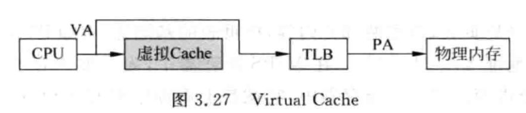
- CPU 发出虚拟地址后，无需等待 MMU 转换，直接使用虚拟地址的低位作为 Index，高位作为 Tag 去查找 Cache
- 实现较为简单，但存在两大问题
- 歧义 ambiguity：两个进程使⽤相同的 virtual tag 对应到不同的 physical tag，可以通过 flush 解决
- 别名 aliasing：两个进程使⽤不同的 virtual tag 对应到相同的 physical tag
-
PIPT（Physically Indexed, Physically Tagged）
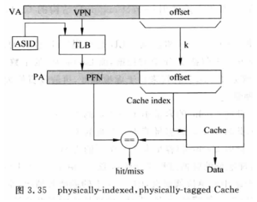
- 由于物理地址唯⼀，没有歧义与别名问题
- ⽆论命中与否，都会经过 TLB 或者⻚表转换，增加了访问时间
-
VIPT（Virtually Indexed, Physically Tagged）
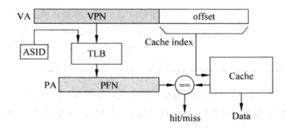
- 使⽤虚拟地址的⼀部分作为 index，使⽤物理地址的⼀部分作为 tag
- TLB 翻译得到 PFN 和 index 索引 Cache 是同时进⾏的
同时利用虚拟和物理缓存优势的方法：Virtually indexed, physically tagged
- 使用页偏移量（在虚拟地址和物理地址中相同）作为 L1 cache 的 index
- 同时把虚拟页号送到 TLB 得到物理页号，并将其和 L1 的 tag 匹配
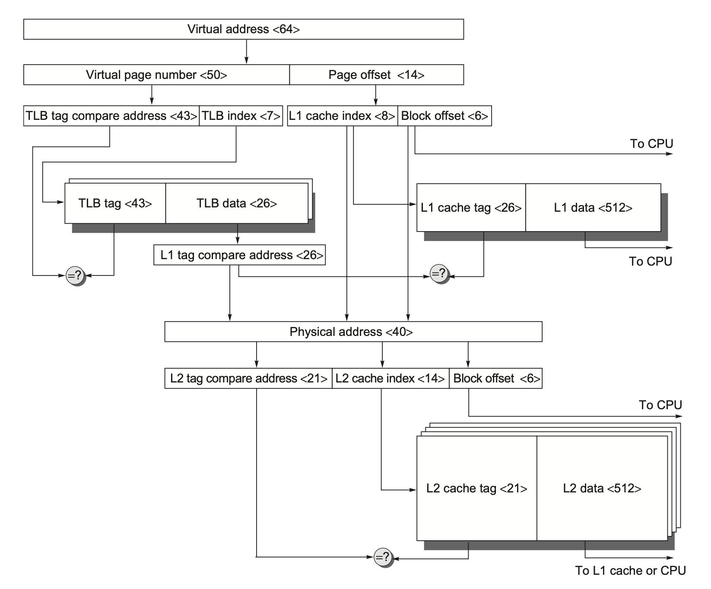
2.3 Virtual Memory¶
1. Four Memory Hierarchy Questions Revisited¶
Q1. Where to place a block?¶
- 数据块放置：全相联（full associative strategy）
- 虚拟内存的失效损失相当相当大（数百万个时钟周期数），因此需要尽可能地降低失效率，而全相联的失效率最低。
Q2. How to find a block?¶
Access memory twice:
- 第一次访问: 查页表（取 PTE）→ 得到物理地址
- 第二次访问: 用物理地址取数据
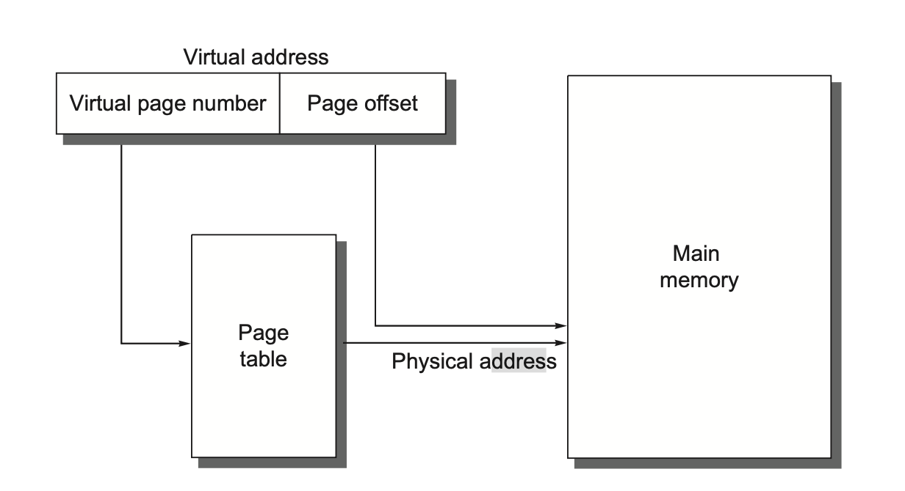
Processing a page fault（该页不在内存中）
- CPU 发出 VA → MMU
- MMU 去内存查 PTE → 发现 Valid = 0（页不在内存）
- MMU 向 CPU 抛出 Exception（缺页异常）
- CPU 陷入操作系统 Page Fault Handler
- OS 从磁盘把缺失的页加载到内存（如果内存满了，先找一个 Victim Page 写回磁盘）
- OS 更新页表（Valid = 1，填入新的物理页号）
- 重新执行之前失败的那条指令
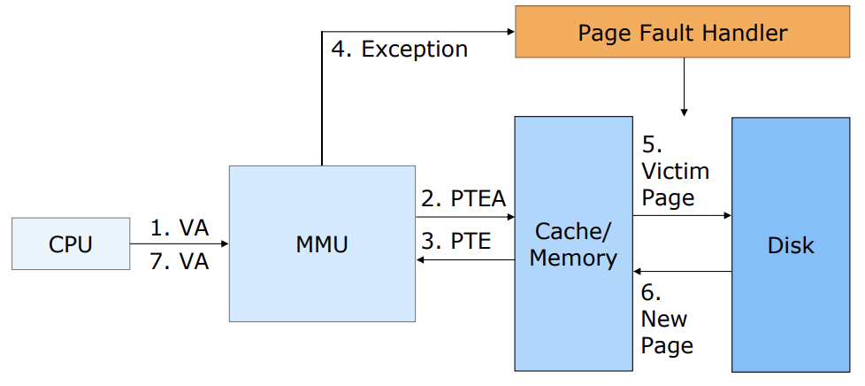
Q3. Which block to replace upon a virtual memory miss?¶
- LRU，具体会用到一个使用位 / 引用位 (use/reference bit)。
- 操作系统会周期性地清除使用位，随后又添上去，这样便可以记录一段时间内页的访问情况。
Q4. What happens on a write?¶
- Write-back strategy（写回）
- 内存和处理器访问时间的差异很大，所以不可能使用写穿策略
- 使用 1 个脏位(dirty bit)，允许数据块在因从硬盘读取而被改变的时候写入到硬盘中
2. Page Table (Address Translation)¶
- Page tables 太大，无法放进内存
- E.g. 32-bit virtual address, 4 KB pages, 4 bytes per page table entry
- Page table size: \((2^{32}/2^{12})\times 2^2=2^{22} \text{bytes}=4\text{MB}\)
- 操作系统采用多级页表（页表的页表）来节省空间:
- one to obtain the physical address from page table
- one to get the data from the physical address
正常来说页表需要两次内存访问，访问效率低下，因此需要页表缓存，即 TLB
Translation lookaside buffer (TLB)
- Tag: 保存虚拟地址 (VPN)
- Data: 保存物理页编号 (PPN), protection field, valid bit, use bit, dirty bit
TLB example
CPU 发出虚拟地址：
- VPN 并行发送到所有标签
- 检查匹配 + 保护位检查
- 命中 → 输出 PPN
- PPN + Offset = 物理地址
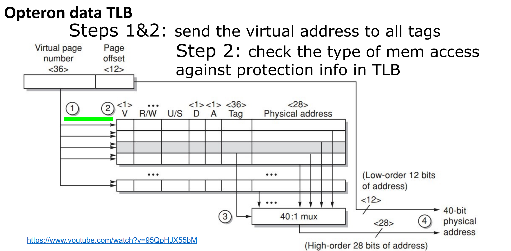
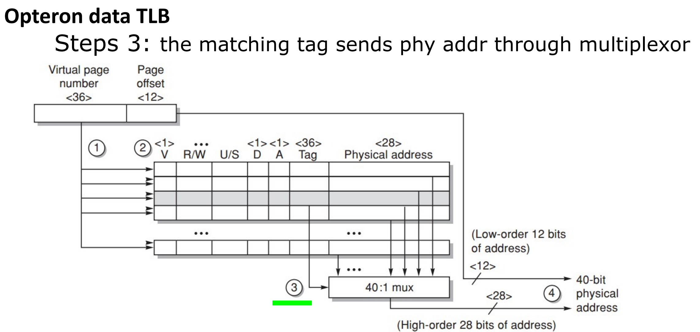
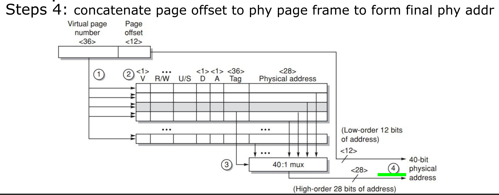
3. Page Size Selection¶
- Pros of larger page size
- 页表的大小和页的大小成反比，因此内存可以通过增大页的大小来节省空间
- 页更大，所以 cache 命中的时间更短（需要遍历的页更少）
- 一次搬运更多的数据，所以更高效，小页可能需要搬运多次
- 更多的内存能被有效映射，TLB miss 次数更少
- Pros of smaller page size
- Conserve storage
When a contiguous region of virtual memory is not equal in size to a multiple of the page size, a small page size results in less wasted storage.
减少对内存的使用，内部碎片更少
- Conserve storage
- Use both: multiple page sizes
Address Translation
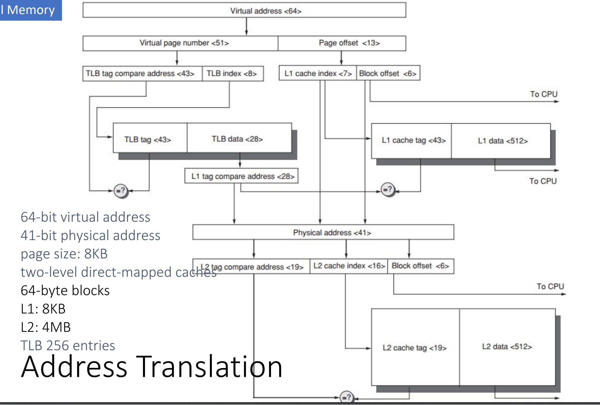
Part 2.Memory Advances¶
2.5 Ten advanced optimizations¶
核心目标：减小 average memory access time
需要优化的指标：hit time, miss rate, miss penalty, cache bandwidth, power consumption
Abstract
- 减少命中时间（Reduce hit time）
- small and simple first-level caches & way prediction（also decrease power)
- avoid address translation; trace cache
- 增加高速缓存带宽（Increase cache bandwidth）
- pipelined, multibanked and non-blocking cache;
- 减少失效损失（Reduce miss penalty）
- critical word first; merging write buffers; victim caches
- mutilevel caches, read miss prior to writes
- 减少失效率（Reduce miss rate）
- compiler optimizations; decrease power;
- larger block size, large cache size, higher associativity
- 通过并行减少失效损失或失效率（Reduce miss penalty/rate via parallelism）
- hardware/compiler prefetching; increase power;
补充：trace cache & victim cache
- Trace cache：根据 CPU 的实际执⾏情况来设计 cache，它存储动态执行的指令序列（即 trace）
- 其工作原理如下：
- 记录执行路径：当处理器执行程序时，追踪高速缓存会“观察”并记录实际执行过的指令序列，包括那些跨越了分支的指令。
- 存储追踪：这些动态执行的指令序列（追踪）被存储在追踪高速缓存中。一个追踪可以包含来自不同内存地址的指令，但它们在逻辑上是连续执行的。
- 预测与命中：当处理器需要获取指令时，它会尝试在追踪高速缓存中查找一个匹配的追踪。如果命中，处理器就可以一次性获取一个较长的、已经排好序的指令序列，而无需担心分支预测和指令获取的停顿。
- 构建追踪：如果追踪高速缓存失效，处理器会从传统的指令缓存中获取指令，并同时在后台构建新的追踪，以便将来使用。
- Victim Caches：牺牲缓存
- ⼀个容量较⼩的全相联缓存
- 原缓存块被替换的时候，会把这个块放⼊ victim cache
- 如果下次访问的时候发现在 victim cache ⾥，就可以减少 miss penalty
- 其工作原理如下：
Opt #1: Small and Simple First-Level Caches¶
- Small size
- support a fast clock cycle: 缓存的物理尺寸越小，地址解码、信号传输和数据读取所需的物理路径就越短，从而允许 CPU 保持极高的时钟频率。
- reduce power: 容量小意味着存储单元少、连线短。在进行读写操作时，需要充放电的电容更小，从而显著降低了动态功耗。
- Lower associativity
- reduce both hit time and power: 高相联度需要在读取时并行比较多个 Tag，并使用复杂的 Multiplexer 来挑出正确的数据，这会增加延迟和功耗。
- 直接映射的特殊优势:
- 相联度为 1，硬件可以将“Tag 检查”和“数据传输”重叠进行。
- 工作原理： CPU 根据 Index 找到位置后，直接读出数据送往 CPU，同时比对 Tag。如果 hit，直接使用数据，速度极快；如果 miss，直接丢弃读出的数据即可。
Opt #2 : Way Prediction¶
Reduce conflict misses and hit time
在普通的 \(N\) 路组相联缓存中，需要并行读取 \(N\) 个 Tag，比较后通过 MUX 挑出正确的数据。这很费时间。路预测引入了 “预判”机制：
- Block Predictor Bits: 在缓存块中额外存储一些位，用来记录上一次访问的特征，从而预测下一次访问该 Index 时，数据最可能在 \(N\) 路中的哪一路
- MUX set early: 根据预测结果，硬件提前把 MUX 指向猜中的那一路
- 并行操作:
- 读数据: 按照预测的路径直接读出数据
- 比对 Tag: 只进行一次 Tag 比较（只比对猜的那一路）
Misprediction
路预测并不总是准确的。如果 Tag 比对发现猜错了（Miss）：
- 补救措施: 在下一个时钟周期，硬件会去检查该 Set 里的其他几路。
- 代价: 这种情况下会产生额外的延迟。但由于程序的局部性，预测准确率通常很高（常在 80%-90% 以上），所以平均下来的性能收益非常可观。
Opt #3 : Pipelined Access & Multibanked Caches¶
Pipelined Access：将原本一个周期完成的缓存访问动作，拆分成多个小的流水线阶段
- 优点：Increase Bandwidth
虽然完成一次完整的访问可能变慢了，但由于变成了流水线，每个时钟周期都可以送入一个新的访问请求，总体时间变快。（类比 CPU 流水线） - 缺点：
- Higher latency： 之前 1 个周期能拿到的数据，现在可能需要 2 或 3 个周期
- 分支预测失败代价变大： 如果 CPU 猜错了指令跳转方向，由于缓存访问流水线变深了，清空并重新填充流水线的代价更高
- Load-Use 延迟增加： CPU 发出 Load instruction 到 Use data 之间隔了更多的时钟周期，这给编译器调度代码增加了难度
Multibanked Caches：把一个大的缓存拆成几个互相独立的 Banks
- 缓存被分成多个 Bank，每个 Bank 都有自己独立的读写电路。
- 顺序交叉编址 (Sequential interleaving)： 为了让数据分布得更均匀，地址被交叉存放在不同的 Bank 中
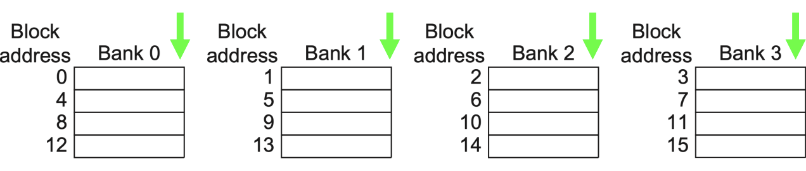
- 优势：支持并发访问 (Simultaneous accesses)
如果 CPU 同时发出两个请求，只要访问的是不同的 Bank，这两个请求就可以在同一个周期内并行完成。这极大地提高了缓存的带宽。 - 局限性：Bank Conflict
如果两个请求不幸撞到了同一个 Bank，只能排队处理
Opt #4 : Nonblocking Caches¶
- Increase cache bandwidth
在传统的“阻塞缓存”中，一旦发生 Cache Miss，整个缓存甚至 CPU 就会陷入停顿，直到数据从主存取回。非阻塞缓存利用了乱序执行 (Out-of-order execution) 的特性，允许缓存在等待缺失数据返回的同时，继续处理后续的请求。 - Hit under miss (一失一中):
当一个访问缺失正在处理时，允许后续的访问如果命中，则直接返回结果 - Miss under miss (双失并发):
允许在处理一个缺失的同时，开始处理另一个缺失 - Hit under multiple misses (多失一中):
即使有多个缺失正在排队处理，依然能给命中的请求提供数据
Opt #5 : Critical Word First¶
- Reduce miss penalty
Critical Word First - 流程：告诉内存控制器，“别按顺序从块头开始传，先把我要的那个字传过来”
- 内存首先发送被请求的那个字（Critical Word）
- 一旦这个字到达，立即送往 CPU，CPU 马上恢复执行
- 与此同时，内存继续把该块中剩余的字填满缓存
- 优点： 理论上能最大程度减少 CPU 的等待时间
Early Restart：这是相对折中、实现起来更简单的一种方案
- 流程：依然按照内存块的正常顺序（从头到尾）进行传输
- 内存按顺序传：Word 0, Word 1, Word 2...
- 一旦传输过程中，正好传到了 CPU 请求的那个字，硬件立刻把这个字递给 CPU
- CPU 恢复执行，而内存继续把剩下的部分传完
- 对比： 如果 CPU 想要的恰好是 Word 0，那它和“关键字优先”一样快；如果 CPU 想要的是最后一个 Word，那它就起不到加速作用
Opt #6 : Merging Write Buffer¶
什么是写缓冲 (Write Buffer)？
当 CPU 执行写指令时，内存速度太慢。为了不让 CPU 等待，硬件会先将数据放入 写缓冲 (Write Buffer)。CPU 继续工作，由写缓冲负责在后台慢慢把数据写回下一级存储。
- 如果 CPU 写入 buffer 的速度太快，其容量有限且处理得不够快，缓冲区就会被填满。Buffer 填满后，CPU 必须停顿 (Stall) 等待空间释放。这就产生了额外的“缺失惩罚”。
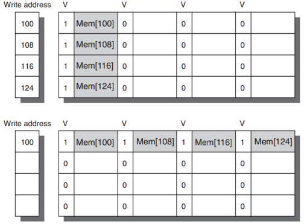
- 未合并： CPU 发出了四次连续的写操作，硬件给每个写操作都单独分配了一个缓冲条目 (Entry)。虽然这些地址在物理上是连续的（都在同一个 Cache Line 内），但它们占用了 4 个槽位。
- 合并后： 硬件 b 把四个条目，全部塞进同一个条目中。现在，这四个数据只占用 1 个槽位。
Opt #7 : Compiler Optimization¶
- Reduce miss rates, w/o hw changes
Tech 1: Loop interchange¶
- exchange the nesting of the loops to make the code access the data in the order in which they are stored
/*Before*/
for(j = 0; j < 100; j++)
for(i = 0; i < 5000; i++)
x[i][j] = 2 * x[i][j];
/*After*/
for(i = 0; i < 5000; i++)
for(j = 0; j < 100; j++)
x[i][j] = 2 * x[i][j];
x[i][j] and x[i][j+1] are adjacent
Tech 2: Blocking¶
Matrix Multiplication
x = y*z; both row&column accesses
/*Before*/
for(i = 0; i < N; i++)
for(j = 0; j < N; j++){
r = 0;
for(k = 0; k < N; k++)
r = r + y[i][k] * z[k][j];
x[i][j] = r;
}
- 矩阵 \(y\)： 每一行被读取一次，具有较好的空间局部性
- 矩阵 \(z\)： 每一列被读取一次。由于内存通常是按行存储的（Row-major），按列读取意味着地址在内存中是“跳跃”的
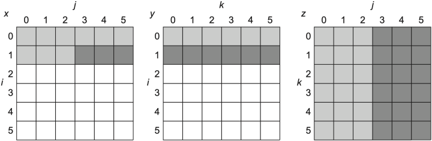
- 问题： 如果矩阵非常大（超过了缓存容量），那么当程序完成一次内层循环、准备重用之前的数据时，那些数据可能已经被新的数据踢出缓存了。这种因为缓存容量不足导致的缺失称为容量缺失（Capacity Miss）
solution
Blocking：不再一次处理整行或整列，而是把大矩阵切成子矩阵（Submatrices / Blocks）
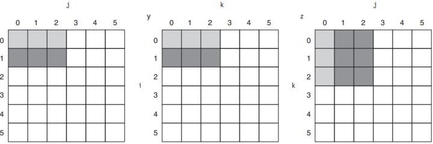
- 尺寸匹配：这个“小块”的大小是经过精确计算的，确保这一块数据能完全放入缓存（比如 L1 或 L2）
- 程序在这一小块数据上完成所有的计算逻辑后再移动到下一块（maximize accesses to loaded data before they are replaced）
Opt #8 : Hardware Prefetching¶
- Reduce miss penalty/rate
- 将数据预先存入 Cache 或一个专门的外部缓冲 (External Buffer)
Instruction Prefetch
- Fetch two blocks on a miss：
当发生一次指令缓存缺失时，硬件不只取回请求的那个块，还会把下一个物理块也取回来 - Instruction Stream Buffer：
- 请求的块放进 Cache，预取的“下一块”放进一个专门的缓冲区（Stream Buffer）
- 如果下一次取的块在 buffer 里，硬件会直接从 Stream Buffer 里读
Similar Data prefetch approaches
Opt #9 : Compiler Prefetching¶
Reduce miss penalty/rate
- 寄存器预取 (Register prefetch)：
将数据直接读入寄存器，相当于提前执行了一条 Load 指令 - 缓存预取 (Cache prefetch)：
将数据搬运到缓存（L1/L2）中，不占用寄存器。这是最常用的方式，因为它不会增加寄存器压力（Register Pressure）。 - 目的：在 CPU 真正执行计算指令前，数据已经处于缓存中，从而将内存延迟“隐藏”在其他计算指令的执行时间里
Example
for(i = 0; i < 3; i++)
for(j = 0; j < 100; j++)
a[i][j] = b[j][0] * b[j+1][0];
- 16-byte blocks;
- 8-byte elements for a and b;
- write-back strategy;
- a[0][0] miss, copy both a[0][0],a[0][1] as one block contains 16/8 = 2;
缺失计算分解：
-
数组
a[i][j]：- 总访问次数：\(3 \times 100 = 300\) 次
- 由于每 2 个相邻元素占用 1 个块，所以每 2 次访问发生 1 次缺失
- \(a\) 的总缺失： \(300 / 2 = 150\) 次
-
数组
b[j][0]和b[j+1][0]：- 注意这里访问的是 \(b\) 的同一列的不同行。在行优先存储中，这意味着地址跨度非常大
- 从
b[0][0]到b[100][0]，这 101 个元素由于分布在不同的行，几乎每个元素都会触发一次缺失 - \(b\) 的总缺失： \(101\) 次
- 总计： \(150 + 101 = 251\) 次缺失
solution
for (j = 0; j < 100; j++){
prefetch(b[j+7][0]);
prefetch(a[0][j+7]);
a[0][j] = b[j][0] * b[j+1][0];
}
for (i = 1; i < 3; i++)
for (j = 0; j < 100; j++){
prefetch(a[i][j+7]);
a[i][j] = b[j][0] * b[j+1][0];
}
}
在优化后的代码中，编译插入了 prefetch(b[j+7][0])
- 逻辑： 因为内存缺失代价（100 CC）远高于单次循环时间（约 7-9 CC）。我们需要提前足够多的迭代次数发出请求，确保数据在 \(j+7\) 次循环开始时刚好送达。
-
- 对于 \(b\)：前 7 次循环（\(j=0 \dots 6\)）依然会缺失，因为预取还没完成。共 7 次缺失。
代价：冷启动缺失 (Cold Misses)
-
对于 \(a\)：每一行（\(i=0, 1, 2\)）的前 7 个元素也会有初始缺失。由于每块存 2 个元素，前 7 个元素涉及 4 个块（\([0,1], [2,3], [4,5], [6]\)）。
-
每行缺失 4 次，三行共 \(4 \times 3 = 12\) 次
-
优化后的总缺失： \(7 + 12 = 19\) 次
Opt #10 : HBM¶
HBM（High Bandwidth Memory） 的特点：
- 比 DRAM 快，但比 SRAM 慢
- 比 DRAM 小，但比 SRAM 大得多
- 带宽极高（堆叠式设计）
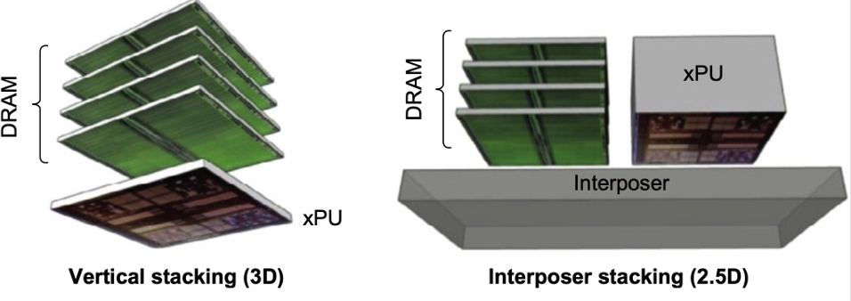
HBM 作为 L4 的缺点
- Tag 的开销太大： 以 1 GiB L4 cache 为例
- 64 B block size -> 96 MiB of tags，占用空间太大
- 4 KiB block size -> 1 MiB of tags，内部碎片太大
- 基本方案（两次访问 DRAM）
- one for tags (address translation)
- one for data (tag comparison)
Optimization 1: place tags and data in the same row
- 打开一行需要消耗很长的时间，但访问已经打开的行只需要 1/3 的时间
- Tag 和 Data 在同一行，打开一次行就能同时获取两者
Optimization 2: alloy cache（合金缓存） - 直接把 tag 和 data 捆绑存储，并采用 direct mapped 的 cache 结构
- 利用 HBM 的突发传输特性，一次读取同时拿到 Tag 和 Data，把两次访问合并为一次
Miss 的处理与加速
- HBM miss requires two DRAM accesses
- 读取主内存的 Tag（地址翻译）
- 读取主内存的数据
- 加速 Miss 检测的两种方法：
- Map 追踪：维护一个映射表，记录哪些块在 Cache 中
- 预测器：根据历史访问模式预测 likely misses
Summary¶
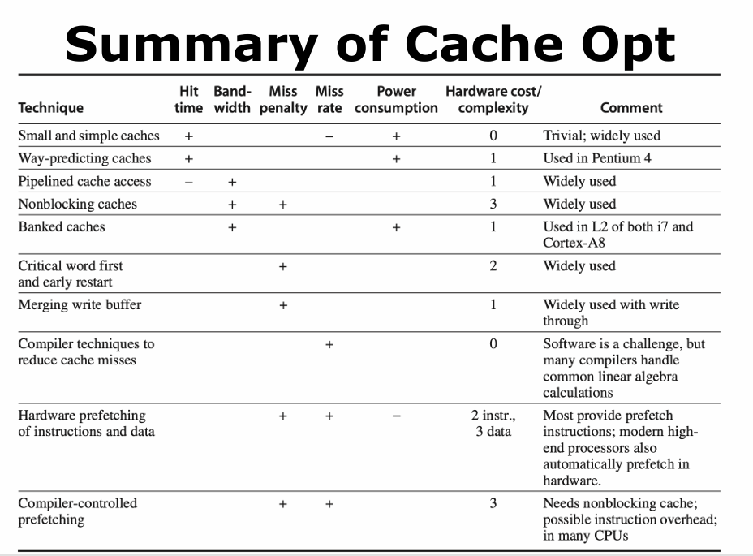
2.6 Virtual Memory¶
虚拟内存的好处：
- Easier/flexible memory management
- Share a smaller amount of physical memory among many processes
- Physical memory allocations need not be contiguous
- memory protection; process isolation
- Introduces another level of secondary storage
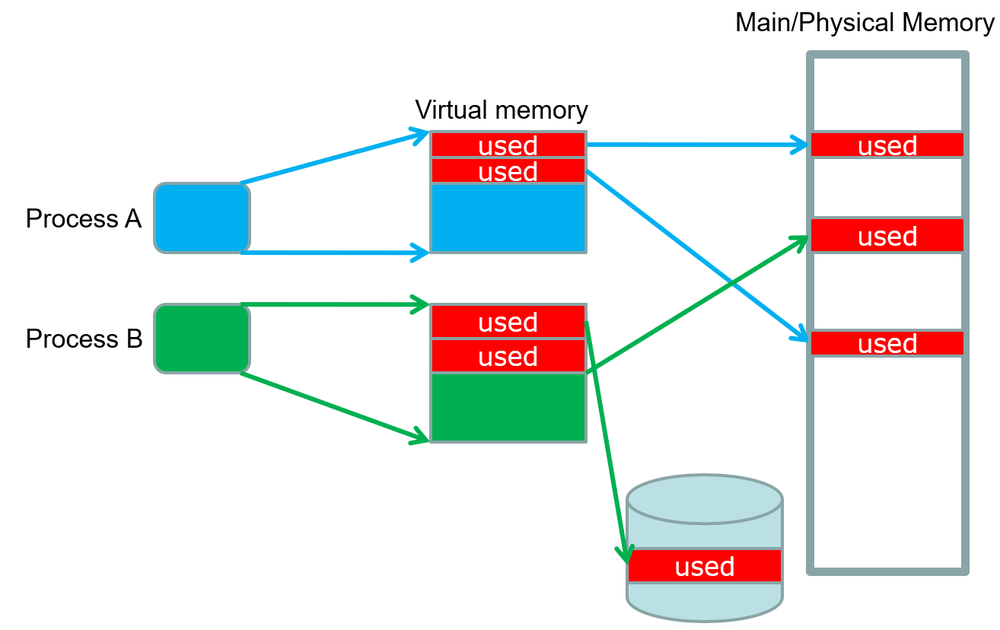
Four tasks for the architecture¶
该架构必须限制用户进程在运行期间可访问的资源，同时允许操作系统进程访问更多资源
Task 1¶
硬件必须支持至少两种运行模式。
- 用户模式（User Mode）：普通应用程序运行在此模式下。在此模式下，程序的指令集受到限制，不能执行一些高风险的特权指令（如直接操作硬件、修改内存管理单元等）。
- 内核/监督者模式（Kernel/Supervisor Mode）：操作系统内核运行在此模式下。拥有最高权限，可以执行所有指令，访问所有内存区域。
Task 2¶
提供一部分处理器状态，用户进程可以“读”但不能“写”。
- 这通常指的是某些特殊的寄存器或状态位
- 读取（Read）：用户程序可能需要读取某些系统状态信息（例如，获取当前时间戳或系统配置）
- 禁止写入（Not Write）：用户程序绝对不能修改这些状态，否则可能改变系统的运行环境或绕过安全限制
Task 3¶
**提供在用户模式和监督者模式之间切换的机制
- 用户态 → 内核态（System Call）：这是最常见的情况。当用户程序需要操作系统提供服务时（例如读写文件、申请内存），它会通过系统调用（System Call） 触发一个特殊的中断或陷阱（Trap），强制 CPU 切换到内核模式，将控制权交给操作系统。
- 内核态 → 用户态：操作系统完成请求的服务后，会执行返回指令，将 CPU 切换回用户模式，把控制权还给用户程序
Task 4¶
提供机制限制内存访问，保护进程状态，且无需在上下文切换时将进程换出到磁盘。
- 内存访问限制：硬件（如内存管理单元 MMU）会检查每一次内存访问请求。如果用户进程试图访问不属于它的内存区域，硬件会立即产生一个“段错误”或“访问违规”异常，由操作系统处理（通常是终止该进程）。
- 无需换盘（Swap to Disk）：这是一个关键点。它强调这种保护是实时的、基于硬件的检查，而不是依靠软件定期将内存数据写入磁盘来保存状态。这意味着即使在内存中同时运行多个进程，它们也是互相隔离的，不需要为了切换进程就把前一个进程的数据先存到硬盘上。
2.7 Virtual Machines¶
- Virtual Machine
- a protection mode with a much smaller code base than the full OS
- VMM: virtual machine monitor hypervisor
- software that supports VMs
- Host underlying hardware platform
2.7.1 Virtual Machines¶
Properties/Benefits
- A single computer runs multiple VMs and can support a number of different OSes
- Multiple OSes all share the hardware resources
2.7.2 VMM¶
Three essential characteristics:
- Mainly for security and privacy sharing and protection among multiple processes
1. 环境一致性：VMM provides an environment for programs which is essentially identical with the original machine;
2. 性能高效性：Programs run in this environment show at worst only minor decreases in speed;
3. 资源控制权：VMM is in complete control of system resources;
Privilege Requirements
- At least two processor modes, system and user
- A privileged subset of instructions that is available only in system mode, resulting in a trap if executed in user mode;
all system resources must be controllable only via these instructions
2.8 Examples¶
2.8.1 ARM Cortex-A 53¶
- ARMv8-A ISA
- 32-bit / 64-bit mode
- 2-instr/clock, clock rate up to 1.3 GHz
- IP (intellectual property) core.
- Hard cores: optimized for a particular semiconductor vendor and cannot be modified
- Soft cores: use a standard lib of logic elements and can be compiled/modified for different semiconductor vendors
Memory Hierarchy¶
- Two-level TLB
- Two-level cache
- LRU-approximation replacement policy
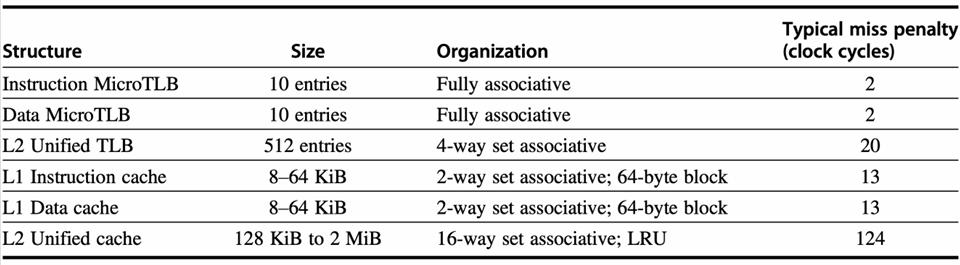
Instruction Access Path¶
- 32 位虚拟地址系统如何映射到 64 KB 大页，并进一步映射到一个 32 KB、64 B 块大小、2 路组相联的 L1 缓存中
- 来源：取指单元（IFetch），只读不写
- 只有 L1 指令缓存和一级 TLB
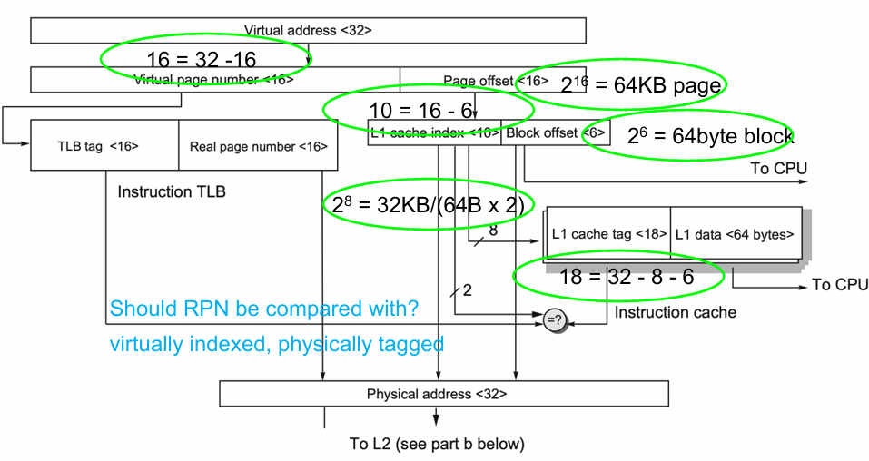
工作原理
TLB 的工作原理：负责“翻译”，把虚拟地址的高位转换成物理地址的高位。
- 输入： 虚拟地址的高 16 位（即 虚拟页号）
- 动作：
- TLB 拿着这 16 位去和自己的标签阵列进行比对。
- 如果找到了（TLB Hit），它就会输出对应的 物理页号（图中为 16 位）
- 输出： 物理页号。这个信号会传到 Cache 那里，准备进行最后的“身份核验”
L1 Cache 的工作原理：负责“取货”，利用虚拟地址的低位（页内偏移）直接找数据
- 输入： 虚拟地址的中间 10 位（即 Cache 索引）和低位 6 位（块偏移）。
- 动作（并行查找）：
- 索引定位： Cache 利用那 10 位索引，直接定位某一个“组”。（因为是 2 路组相联，所以这个组里有 2 行数据）。
- 读取数据与标记： Cache 把这 2 行里的 data（64字节）和Tag（18位）都读出来。
- 注意：这里的Tag是物理地址的高位部分，不是虚拟地址。
“握手”时刻：比较
这是图中蓝色文字 Should RPN be compared with? 和下方比较器（那个半圆圈符号）的核心所在。
- 问题： Cache 刚才读出来的数据，真的是 CPU 想要的那个地址的数据吗？
- 解决：
- Cache 里存的是物理标记（18位）。
- TLB 刚刚翻译出来的是物理页号（16位）。
- 拼接： 系统会把 TLB 输出的 16位物理页号 加上虚拟地址中间的 2位（图中 18=16+2），拼成一个 18 位的物理标记。
- 比对： 将拼好的这个 18 位物理地址，与 Cache 里读出来的 18 位标记进行比对。
TLB 负责算出“物理地址的前半部分”，Cache 负责根据“虚拟地址的后半部分”把货找出来，最后两者碰头确认“这货是不是你要的”。
Data Access Path¶
- 来源：加载/存储单元（Load/Store），既读又写
- 包含 L1 数据缓存 + L2 统一缓存
- 包含多级 TLB：L1 DTLB + L2 TLB（Unifield L2 TLB）
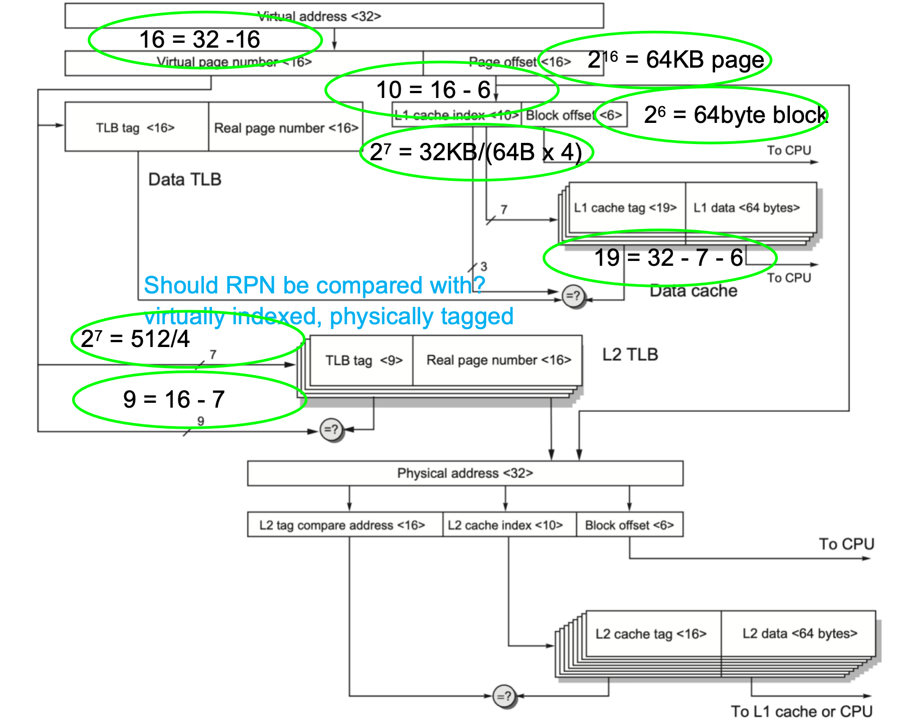
工作流程
这条“路径”包含以下几个关键步骤：
- 起点（虚拟地址）： CPU 发出一个虚拟地址（比如 0x00401234）。
- 分流（并行处理）：
- 高位（页号）： 走向 TLB（快表），进行地址翻译，把虚拟页号变成物理页号。
- 中低位（索引+偏移）： 走向 L1 Cache（一级缓存），直接定位到缓存的具体位置（这就是 VIPT 技术）。
- 汇合与验证： TLB 翻译出的物理页号与 Cache 里读出的标签（Tag）进行比对。
- 命中（Hit）或缺失（Miss）：
- 命中： 数据直接从 L1 Cache 传给 CPU（路径结束，速度极快）。
- 缺失： 路径延长，L2 Cache -> 还没找到 -> 主内存（RAM）-> 填入 Cache -> 传给 CPU
2.8.2 Intel Core i7-6700¶
- 64-bit x 86-64 ISA
- out-of-order 4-core processor
- multiple issue, dynamically scheduled, 16-stage pipeline
- up to 4 instructions per cycle per core
- 4.0 GHz
- peak rate of 16 billion instructions per second per core
- up to 3 parallel memory channels
- DDR3-1066
- peak memory bandwidth of 25+ GB/S
- 48-bit virtual addresses
- 36-bit physical addresses -> 36 GiB
- two-level TLB
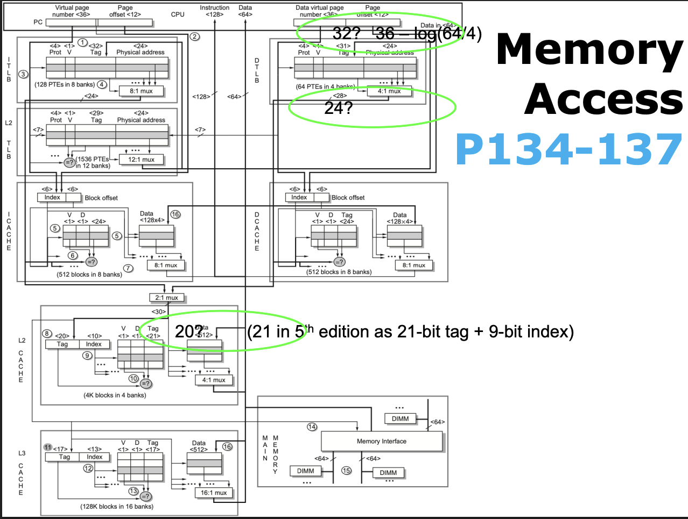